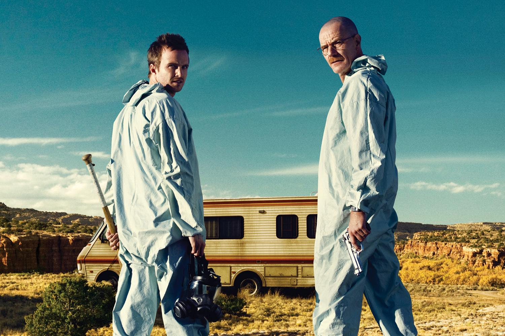

Temporada 1
Walter White, un profesor de quimica diagnosticado con cancer, decide fabricar metanfetamina junto a Jesse Pinkman para conseguir dinero para su familia. Asi comienza su entrada en el mundo criminal.
Breaking Bad cuenta con la transformacion de Walter White a lo largo de cinco temporadas. Cada una muestra como sus decisiones afectan su vida, su familia y su relacion con el mundo criminal.

Walter White, un profesor de quimica diagnosticado con cancer, decide fabricar metanfetamina junto a Jesse Pinkman para conseguir dinero para su familia. Asi comienza su entrada en el mundo criminal.
El negocio empieza a crecer y las consecuencias de sus actividades se vuelven cada vez mas graves. Walter y Jesse deben enfrentar nuevos peligros, mientras sus vidas personales empiezan a deteriorarse.
Walter intenta mantener el control de su negocio y se relaciona con una organizacion criminal mucho mas poderosa. Al mismo tiempo, aumentan los conflictos familiares y las tensiones con Jesse.
La rivalidad entre Walter y Gustavo Fring llega a un punto critico. Ambos intentan imponerse mediante estrategias y decisiones peligrosas, mientras Jesse queda atrapado en medio del conflicto.
Walter alcanza un nuevo nivel de poder, pero sus acciones provocan consecuencias irreversibles. La investigacion de Hank se acerca cada vez mas a la verdad y la historia llega a su desenlace.